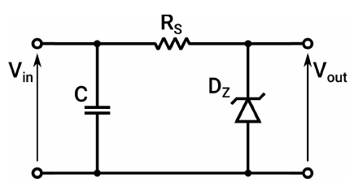

32. Zener diod va chiziqli (linear) stabilizatorlar
1. Stabilizator nima qilishi kerak
Stabilizator (voltage regulator) kirish VI va yuklama toki IL o'zgarsa ham chiqishda bir xil VO ushlab turadi. Sifatini ikki son ko'rsatadi:
- Kirish bo'yicha (line regulation): SV = ΔVO / ΔVI. Ripple ham kirish o'zgarishi: chiqish ripple = SV · kirish ripple. Kichik bo'lsa yaxshi.
- Yuklama bo'yicha (load regulation): RO = ΔVO / ΔIO (chiqish qarshiligi). Kichik bo'lsa yaxshi.
Ikki asosiy usul: parallel (shunt): tok bo'luvchi, ortiqcha tokni yuklamaga parallel element (zener) yutadi; ketma-ket (series): kuchlanish bo'luvchi, ortiqcha kuchlanishni ketma-ket element (tranzistor) yutadi.
2. Zener diod
Oddiy diod teskari yo'nalishda tok o'tkazmaydi, lekin juda katta teskari kuchlanishda "teshiladi" (breakdown) va buziladi. Zener diod esa aynan shu teskari teshilish sohasida buzilmasdan ishlash uchun yasalgan. U yerda tok keng oraliqda o'zgarsa ham kuchlanish deyarli bir xil: VZ.
Model (slayd): zener = kuchlanish manbai VZ0 + kichik ketma-ket qarshilik rZ (differensial qarshilik):
VZ = VZ0 + rZ · IZIshlash shartlari: IZ ≥ IZmin (aks holda "tizza" dan chiqmaydi va stabillamaydi), IZ ≤ IZmax = PZmax / VZ (aks holda qiziydi va kuyadi).
068. A Zener diode: a) cannot operate in breakdown region b) cannot operate in forward bias c) can keep constant the current through the diode d) can keep constant the voltage across the diode
Javob
d). Teshilish sohasida tok o'zgarsa ham kuchlanish ≈ VZ. (To'g'ri yo'nalishda oddiy dioddek ishlaydi, demak b noto'g'ri.)
3. Parallel (zener) stabilizator
Sxema: VI → R (RS) → tugun (VO) → zener va yuklama parallel. R dagi tok ikkiga bo'linadi:
IR = (VI − VO) / R = IZ + IOVI o'zgarsa yoki IO o'zgarsa, IZ o'zgaradi, VO esa deyarli VZ da qoladi. Yuklama tok olmasa, butun tok zenerdan o'tadi (eng og'ir holat zener uchun). Ya'ni manbadan olinadigan tok deyarli doimiy (yuklama + zener yig'indisi), shuning uchun FIK past: faqat kichik quvvat uchun.
056. A voltage regulator using a parallel Zener diode: a) draws constant the current from the power supply b) keeps constant the power supply voltage c) inverts the polarity of the output voltage d) can increase the output voltage
Javob
a). IR = (VI − VZ)/R yuklamaga bog'liq emas: yuklama kam olsa, zener ko'p oladi. Manbaning o'z kuchlanishini u ushlamaydi (b), VO < VI (d noto'g'ri).
Slayddagi mashq E2.1: R ni tanlash (to'liq rasmiy yechim)
Design a parallel regulator with VI = 10 V → 20 V, VO = 5 V (as close as possible), IO = 0 mA → 100 mA. Available Zener diode: VZO = 5 V, RZ = 1 Ω, IZmin = 5 mA, PZmax = 2 W. Calculate: drop resistance R (min/max); VO min/max; PRmax for R.
Yechim
Asosiy tenglama: R = (VI − VO) / (IO + IZ).
- Rmin: zener kuymasin. Eng yomon: VI max, IO = 0 (hamma tok zenerga). IZmax = 2 W / 5 V = 0.4 A. Rmin = (20 − 5)/(0 + 0.4) = 37.5 Ω.
- Rmax: zener stabillashda qolsin (IZ ≥ IZmin). Eng yomon: VI min, IO max. Rmax = (10 − 5)/(0.1 + 0.005) = 47.62 Ω. Demak 37.5 Ω ≤ R ≤ 47.6 Ω.
- VO = VZ0 + RZ·IZ: VOmin = 5 + 1 · 0.005 = 5.005 V; VOmax = 5 + 1 · 0.4 = 5.4 V.
- PRmax = VRmax²/Rmin = (20 − 5)²/37.5 = 6 W.
Qoida: Rmin ← (VImax, IOmin, IZmax); Rmax ← (VImin, IOmax, IZmin).
4. Imtihon masalasi: 2020-09 (7 ball)
The linear voltage regulator in the schematic below uses a Zener diode with Zener voltage VZ0 = 3.9 V and internal resistance ri = 5 Ω to regulate the output voltage Vout. The input voltage Vin is generated by an ideal full-wave rectifier from a sine wave voltage with frequency 50 Hz and peak voltage 6 V. Assuming that the value of the series resistance is RS = 100 Ω and the value of the filtering capacitor is C = 400 µF, calculate the amplitude of the ripple of the output voltage ___ V [7 points].

Yechim (rasmiy, qadam-baqadam)
Ikki qadam: (1) C dagi kirish ripple; (2) uning chiqishga qancha o'tishi.
- RS dagi tok (taxminan doimiy): IS = (Vin − VZ0)/RS = (6 − 3.9)/100 = 21 mA.
- Kirish ripple (ikki yarim davrli → yarim davr = 1/(2·50) = 0.01 s): VinRIP = IS · 0.01 / C = 0.021 · 0.01 / 0.0004 = 0.53 V. (31-darsdagi IO/(2fC) formulasi.)
- Chiqish ripple: o'zgarish uchun zener = faqat ri (VZ0 doimiy). RS va ri kuchlanish bo'luvchi: VoutRIP = 0.53 · ri/(ri + RS) = 0.53 · 5/105 = 0.025 V = 25 mV.
Rasmiy javob: 0.025 V. Bu yerda SV = ri/(ri + RS) = 0.048: stabilizator ripple ni ~21 marta kamaytirdi.
5. Ketma-ket (series) stabilizator
Zener katta tok bera olmaydi. Yechim: yuklama tokini tranzistor orqali o'tkazish, zener faqat "buyruq" (tayanch kuchlanish) beradi:
- VO = VZ − VBE. Yuklama toki β marta kattaroq bo'lishi mumkin: zener toki faqat IO/β ga o'zgaradi → RO ancha kichik (yuklama bo'yicha yaxshiroq), SV zenerniki bilan bir xil.
- Tranzistor = boshqariladigan "o'zgaruvchan rezistor": ortiqcha VI − VO unda issiqlikka aylanadi. Shuning uchun doim VO < VI va minimal farq (dropout) kerak.
- Yaxshiroq: teskari aloqa (feedback). Op-amp chiqishning bir qismini β·VO tayanch VREF bilan solishtiradi va tranzistorni boshqaradi: β·VO = VREF → VO = VREF/β.
- Tok cheklagich: kichik RS dagi kuchlanish 0.7 V dan oshsa, qo'shimcha tranzistor asosiy tranzistorni yopadi: IOmax = 0.7 V / RS (qisqa tutashuvdan himoya).
Masalan 12 V → 5 V: η ≈ 42%, qolgan 58% issiqlik. Yaxshilash: LDO (low dropout, kichik VI − VO bilan ishlaydi), yoki impulsli stabilizator (33-dars, η ≈ 90%+).
6. Tayyor mikrosxemalar: 78xx, 79xx, 317, LDO
- 78xx: musbat qat'iy kuchlanish, xx = volt (7805 → 5 V). 79xx: manfiy. 317: sozlanuvchi. LM9076: LDO.
- 3 oyoqli (IN, OUT, COMMON) stabilizator OUT va COMMON orasida doimiy VP (masalan 5 V) ushlaydi. COMMON ni yerga emas, R1–R2 bo'luvchiga ulasak, chiqish kattaroq bo'ladi:
(IQ = COMMON oyog'idan chiqadigan kichik "tinch" tok; kichik bo'lsa ikkinchi hadni tashlash mumkin.)
064. The schematic in the following figure represents: a) a parallel voltage regulator b) a variable output voltage regulator c) a way to invert the polarity of the output voltage d) a flyback voltage regulator

Javob
b) a variable output voltage regulator. R1, R2 bo'luvchi bilan VO = Vreg(R1 + R2)/R1 + IQ·R2 ni sozlash mumkin.
7. Slayddagi mashq Ee3: rectifier + zener
To the previous rectifier-filter group (half-wave, VS = 18 Veff, 60 Hz, C = 470 μF) is added a Zener diode: R = 120 Ω; VZ0 = 9 V; rZ = 10 Ω; IZmin = 7 mA. a. For VA = VAdc + VAR, calculate the continuous component VOdc and the ripple voltage VOR for a load current IO = 100 mA. b. Determine the power PZ dissipated by the Zener diode for VA = VAdc, IO = 100 mA. What operating conditions maximize PZ? c. Determine the maximum value of R that maintains the functionality of the regulator for output currents up to 200 mA.
Yechim (slaydda yechim yo'q, men hisobladim)
a) C dan olinadigan tok IA = IO + IZ ≈ 118 mA (birgalikda yechiladi). VAR = IA/(f·C) = 0.118/(60 · 470·10−6) = 4.19 V; VAdc = 25.46 − 4.19/2 = 23.36 V.
Tugun tenglamasi: (VAdc − VO)/120 = 0.1 + (VO − 9)/10 → VO = 9.18 V (IZ = 18 mA ≥ 7 mA ✓).
Ripple: VOR = VAR · rZ/(R + rZ) = 4.19 · 10/130 = 0.32 V.
b) PZ = VO · IZ = 9.18 · 0.018 ≈ 0.17 W. Eng katta PZ: IO = 0 (hamma tok zenerga) va VA eng katta.
c) IO = 200 mA, IZ ≥ 7 mA → IA = 0.207 A; VA ning eng past nuqtasi ≈ 25.46 − 0.207/(60 · 470·10−6) = 18.1 V; VO ≈ 9.07 V. Rmax = (18.1 − 9.07)/0.207 ≈ 44 Ω. (Berilgan 120 Ω bilan 200 mA ni ta'minlab bo'lmaydi.)
O'zingizni tekshiring
Javob
1/6.2 = 161 mA.Javob
Rmin = (15 − 5.1)/0.2 = 49.5 Ω; Rmax = (12 − 5.1)/0.055 = 125 Ω.Javob
IS = 2.1/200 = 10.5 mA → VinRIP = 0.0105 · 0.01/0.0004 = 0.2625 V → VoutRIP = 0.2625 · 5/205 = 6.4 mV.Javob
5 · 2.4/1 = 12 V.Javob
η ≈ 3.3/9 = 37%; P = (9 − 3.3) · 0.5 = 2.85 W.Yangi atamalar
| Atama | Inglizchasi | Ma'nosi |
|---|---|---|
| Stabilizator | voltage regulator | VI va IO o'zgarsa ham doimiy VO |
| Zener diod | Zener diode | Teskari teshilishda ishlaydi, V ≈ VZ |
| Differensial qarshilik | rZ (ri) | ΔV/ΔI zener sohasida (kichik) |
| Parallel stabilizator | shunt (parallel) regulator | Ortiqcha tokni parallel element yutadi |
| Ketma-ket stabilizator | series regulator | Ortiqcha kuchlanishni ketma-ket tranzistor yutadi |
| Emitter qaytargich | emitter follower, common collector | VO = VB − VBE, tokni β marta kuchaytiradi |
| Kirish/yuklama bo'yicha stabillik | line SV / load RO | ΔVO/ΔVI va ΔVO/ΔIO |
| Dropout | dropout voltage | Ishlash uchun kerakli minimal VI − VO |
| LDO | low dropout regulator | Kichik dropout → yuqoriroq η |
| Tinch tok | quiescent current IQ | Stabilizatorning o'z ishlashi uchun toki |
📝 Konspekt (daftarga yozib oling)
- Parallel (zener): oddiy, manbadan doimiy tok oladi, FIK past, kichik quvvat. Eng og'ir holat zener uchun: IO = 0, VI max.
- Series (BJT/MOS + VREF + op-amp): katta tok, VO < VI har doim, dropout kerak; LDO = kichik dropout.
- 78xx musbat, 79xx manfiy, 317 sozlanuvchi.
- Javoblar: 068 d; 056 a; 064 b; 2020-09 → 0.025 V; E2.1 → 37.5–47.6 Ω, 5.005–5.4 V, 6 W.